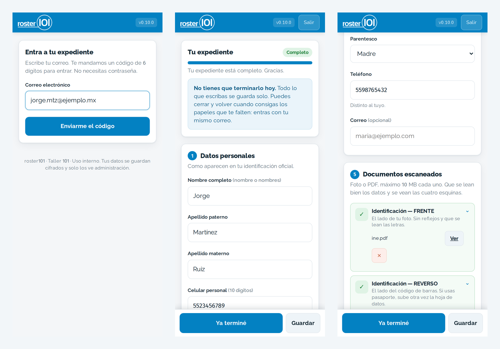
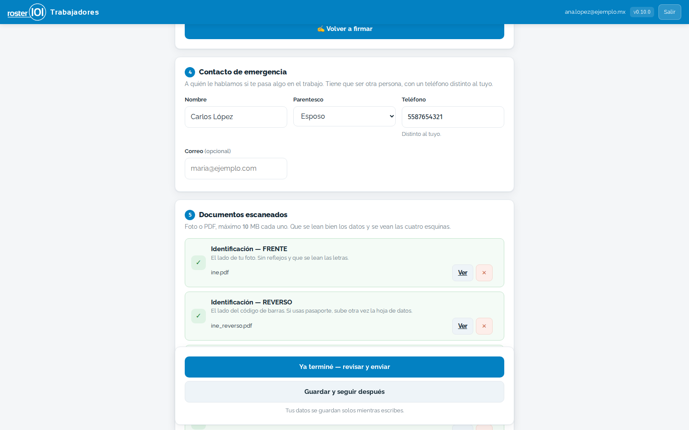
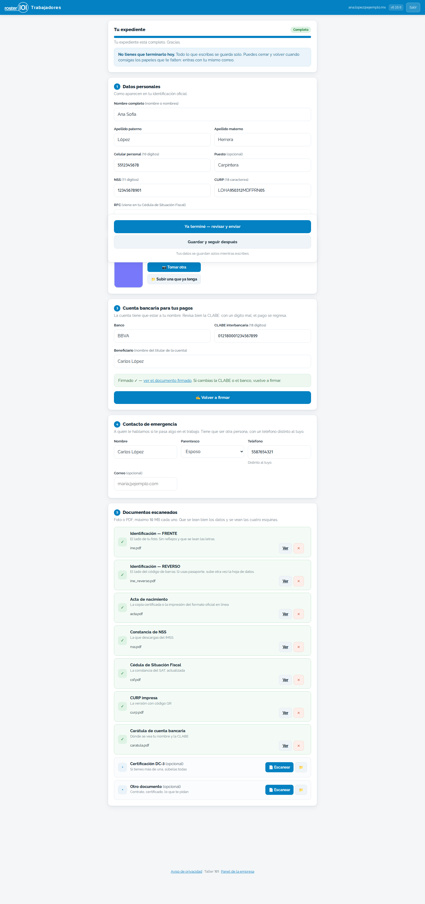
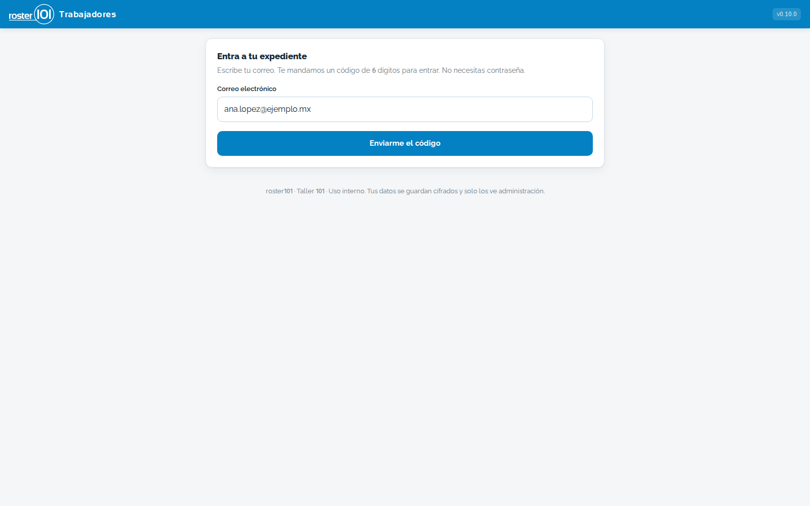

Cada persona captura sus datos —NSS, CURP, RFC, cuenta bancaria, contacto de emergencia— y escanea sus documentos con la cámara del teléfono. La empresa los ve completos en su panel, en el orden que los pide el IMSS, el banco o el contador, y los baja en PDF, CSV o ZIP. Sin contraseñas: se entra con un código que llega al correo.
Pedir una demostración


